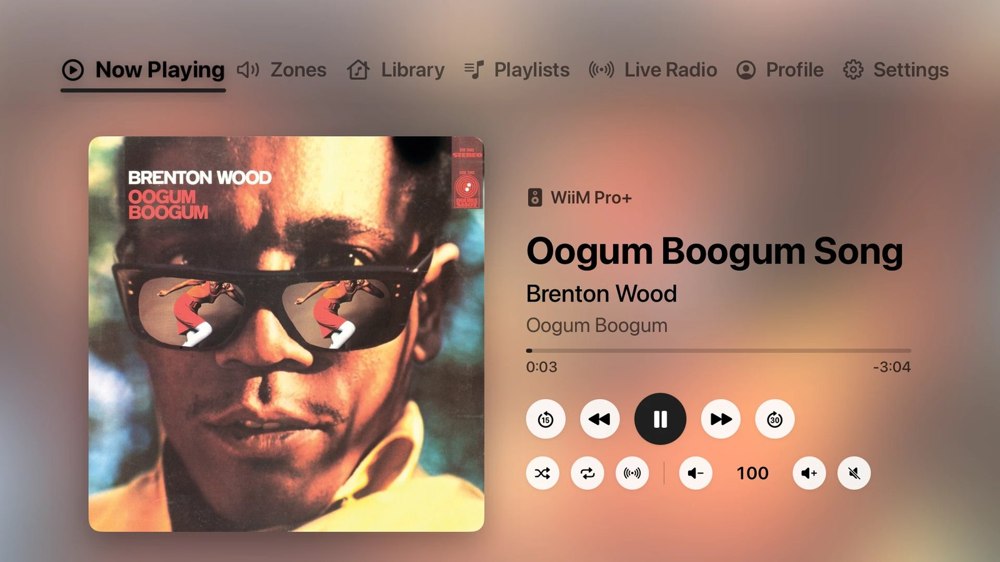
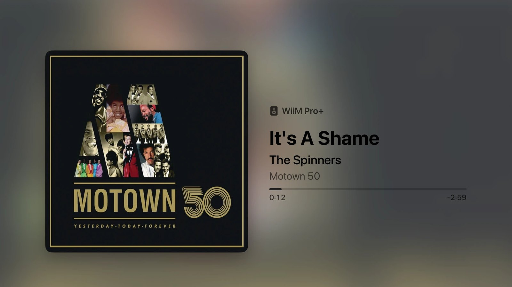
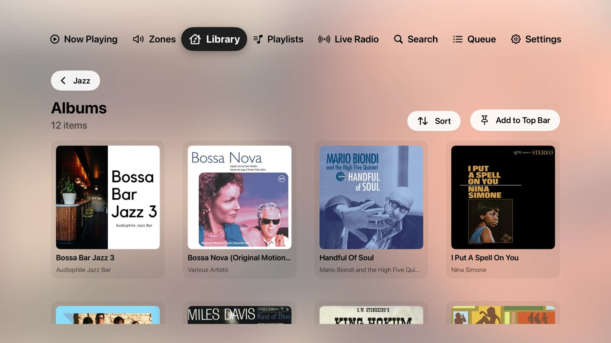
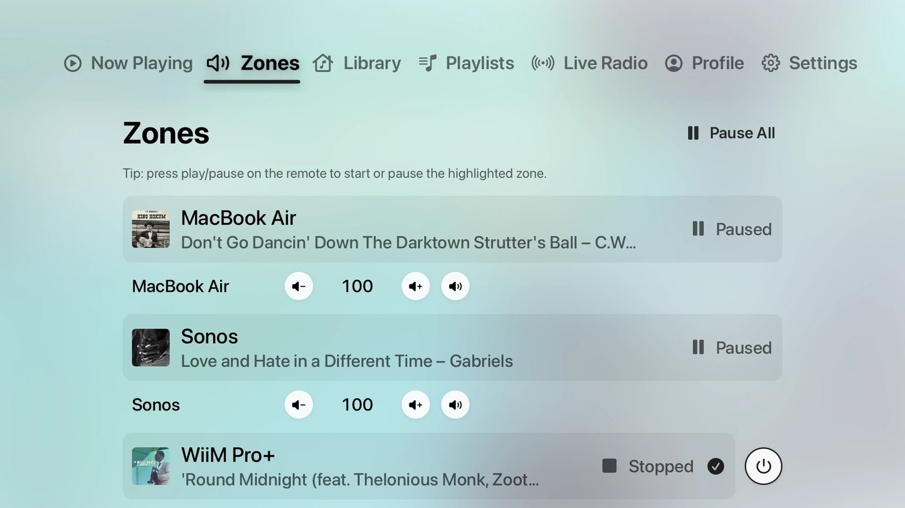
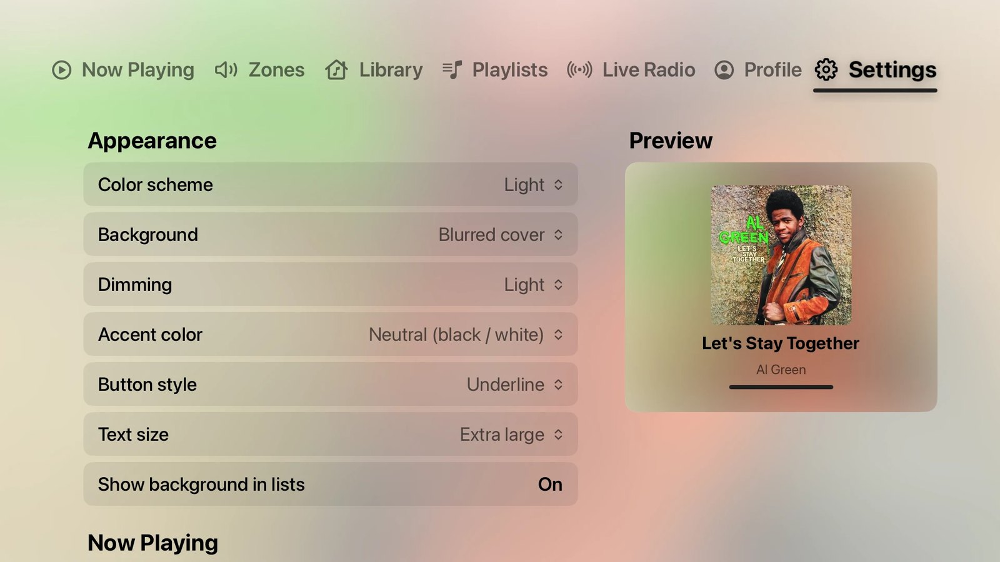

Your music, the way it deserves to look on the big screen.
Klangbild connects directly to your Roon Core. No extra server, no account, nothing to configure.
Now Playing
Large cover art on a background that follows the album. When you put the remote down, the controls fade away and the cover moves to the center: a calm display for your music.
Library & playlists
Browse everything in Roon. Playlist folders get cover mosaics. Sort long playlists, and they play in the order you see.
Live Radio & search
Your stations with their logos, your tags, and search across all of Roon.
Zones
Switch zones, set the volume per output, move playback to another room and put devices into standby.
Profiles
Switch Roon profiles right from the top bar. Library and playlists follow along.
Made yours
Light or dark, dimming, accent color, text and cover size, button style. Pin any Roon folder to the top bar.
Built for the sofa and the Siri Remote.
The background takes its colors from the album that is playing. Light or dark, it's your call.





Three steps to your couch.
Klangbild is in a free public beta via Apple's TestFlight.
Install TestFlight
Get Apple's free TestFlight app from the App Store on your Apple TV.
Accept the invite
Open the beta link on your iPhone or Mac, then install Klangbild on the Apple TV.
Enable it in Roon
In Roon, go to Settings › Extensions and enable “Klangbild”. That's it.
Model KB-1
| Platform | Apple TV HD and Apple TV 4K, tvOS 17 or later |
|---|---|
| Connects to | Roon Core on the same network, found automatically or by IP address |
| Audio | Klangbild is a remote and display. Audio plays on your Roon zones, or on the Apple TV via AirPlay. |
| Language | English |
| Data collected | None. No account, no tracking, no analytics. Privacy policy |
| Price | Free during the beta |